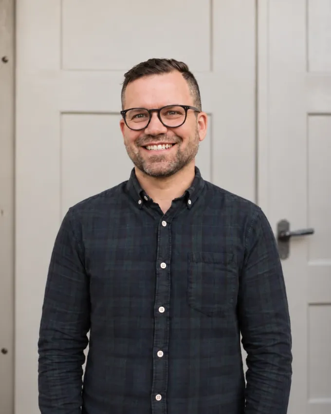

Du machst gute Arbeit.Man müsste sie online auch sehen.
Ich baue Websites für Selbstständige und kleine Unternehmen in Olten und der Region, die ihr Fach verstehen, online aber kaum stattfinden. Von Hand gebaut, zum Festpreis.
Empfohlen wirst du längst.Gefunden wirst du nicht.
Deine Kunden kommen über Mundpropaganda, und das funktioniert. Bis jemand deinen Namen hört, ihn abends googelt und nichts findet ausser einem Eintrag von 2014 und drei Bildern von der Konkurrenz.
Eine Website ersetzt die Empfehlung nicht. Sie sorgt dafür, dass die Empfehlung nicht ins Leere läuft.
Was am Ende dasteht.
Eine Website, die deinen Betrieb erklärt, statt ihn nur zu dekorieren. Vier Dinge gehören für mich dazu.
In fünf Sekunden verständlich.
Wer fremd auf deiner Seite landet, weiss sofort, was du machst, für wen und wie man dich erreicht. Mehr muss eine Startseite nicht leisten. Weniger darf sie nicht.
Auf jedem Gerät richtig.
Nicht nur am Desktop schön und danach fürs Handy zusammengedrückt. Die meisten schauen zuerst auf dem Telefon, oft im Stehen, mit einer Hand. Deshalb fange ich dort an.
Individuell gebaut, nicht zusammengeklickt.
Gestaltet für deinen Betrieb und von Hand umgesetzt. Deine Seite sieht nicht aus wie zwölf andere in deiner Branche, und sie lädt schnell, weil nichts Unnötiges mitkommt.
Sie gehört dir. Punkt.
Domain, Dateien und Inhalte bleiben bei dir. Willst du irgendwann wechseln, nimmst du alles mit.
So läuft es ab.
Vier Schritte, keine Überraschungen dazwischen. Du weisst vor dem ersten Gespräch, woran du bist.
Du rechnest
Sieben Fragen im Kostenrechner, und du siehst sofort, in welchem Rahmen dein Projekt liegt.
Ich schaue hin
Ich lese deine Angaben, schaue mir deinen Betrieb an und rufe dich kurz an, um zu verstehen, was du dir vorstellst. Dann bekommst du ein verbindliches Festpreisangebot. Wenn du weniger brauchst als du angekreuzt hast, sage ich dir das, auch wenn es mich Geld kostet.
Wir bauen
Ein Gespräch über die Inhalte, dann baue ich. Du siehst die Seite zwischendurch und sagst, was nicht stimmt. Kurze Wege statt langer Sitzungen.
Es geht live
Domain und Hosting sind eingerichtet, die Seite läuft. Willst du später etwas ändern, meldest du dich und bezahlst genau das.
Nicht jede Website braucht alles.Deine braucht das Richtige.
Eine Seite
Was du machst, für wen, wie man dich erreicht. Auf einer Länge, ohne Umwege. Für die meisten Betriebe reicht genau das.
Einschätzen →Firmenwebsite
Drei bis fünf Seiten, wenn Leistungen, Team oder Standorte wirklich getrennt gehören und nicht nur, weil ein Menü sonst leer aussieht.
Einschätzen →Bestehendes erneuern
Deine Seite steht, sieht aber aus wie 2016 und lädt wie 2011. Ich schaue zuerst hin und sage dir dann ehrlich: aufhübschen oder neu bauen.
Einschätzen →Festpreis statt „ab“ Direkt mit dem, der sie baut Rahmen in zwei Minuten
Gebaut, nicht behauptet.Echte Seiten, aufgeschnitten.
Statt einer Galerie mit Logos liegen hier echte Arbeiten auf dem Tisch. Zoom in ein Projekt und fahr mit dem Zeiger oder dem Finger über das Fenster, darunter liegt der Bauplan.


Projekt 01 · 2026
GuardOpS
Produktwebsite · Software für Schweizer Sicherheitsdienste · online
guardops.ch ansehen ↗


Projekt 02 · 2026
Craniosacral Praxis Johann von Arb
Fulenbach · eine Seite · von Hand gebaut, ohne Baukasten
Seite ansehen ↗Durchschnitt: mittlere Website am Desktop laut HTTP Archive, Web Almanac 2024.
Was oft gefragt wird.Ehrlich beantwortet.
Deine Frage ist nicht dabei? Schreib sie in den Kostenrechner, ganz am Schluss hat sie Platz.
Kann ich meine Website selbst bearbeiten?
Nicht über ein Login, und das ist Absicht. Ohne CMS gibt es keine Updates, keine Erweiterungen und nichts, was über Nacht kaputtgeht. Änderungen schickst du mir, ich setze sie um und verrechne den Aufwand. Kein Abo.
Warum kein WordPress oder Baukasten?
Für eine Seite, die zeigt, was du machst, ist das zu viel Maschine: laufende Updates, Sicherheitslücken, monatliche Gebühren. Von Hand gebaut lädt sie schneller, ist sicherer und kostet im Betrieb nur Hosting und Domain.
Was kostet eine Website bei dir?
Das hängt vom Umfang ab und davon, was an Texten und Bildern schon da ist. Einen Startpreis mit „ab“ nenne ich bewusst nicht, er sagt wenig über die Rechnung am Ende. Der Kostenrechner zeigt dir in sieben Fragen einen Rahmen, danach bekommst du einen Festpreis. Unter tausend Franken gibt es bei mir keine Website.
Wie lange dauert es, bis sie live ist?
Üblich sind rund zwei Monate ab Zusage. Am meisten Zeit brauchen meist Texte und Bilder, nicht der Bau. Hast du einen festen Termin, sag ihn früh.
Machst du auch Fotos oder Videos?
Ja, ich fotografiere und filme selbst. Fehlen gute Bilder, komme ich in deinen Betrieb, und Bilder und Seite passen danach zusammen. Das offeriere ich separat, weil Anfahrt und Umfang den Preis bestimmen.
Findet man mich damit bei Google?
Die Seite ist so gebaut, dass Google sie gut lesen kann: sauberer Aufbau, schnelle Ladezeit, die nötigen Angaben im Hintergrund. Einen Platz ganz oben garantiert dir niemand ehrlich. Für Suchen in der Region zählt zusätzlich dein Google-Unternehmensprofil, ich sage dir, was es dafür braucht.
Arbeitest du nur in der Region Olten?
Ich sitze in der Region Olten und komme für Gespräche und Fotos gern vorbei. Für Betriebe weiter weg geht vieles auch per Telefon oder Video.
Wer das macht.

Ich bin Adrian, aus der Region Olten. Ich baue jede Seite selbst, vom ersten Gespräch bis zum Livegang.
Du hast eine Ansprechperson, die deinen Betrieb kennt und deine Seite in- und auswendig. Kein Projektbüro, keine Runde mit vier Leuten, die nie bei dir waren.
Shops und Bestellsysteme baue ich nicht. Das sage ich dir lieber jetzt als in Woche sechs.